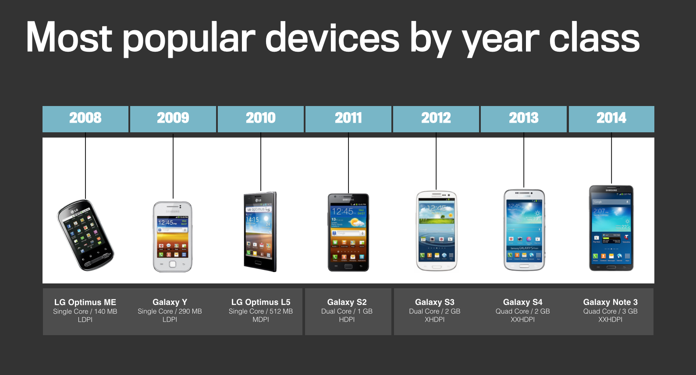
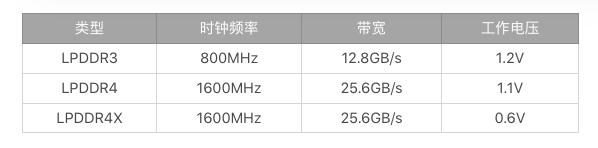
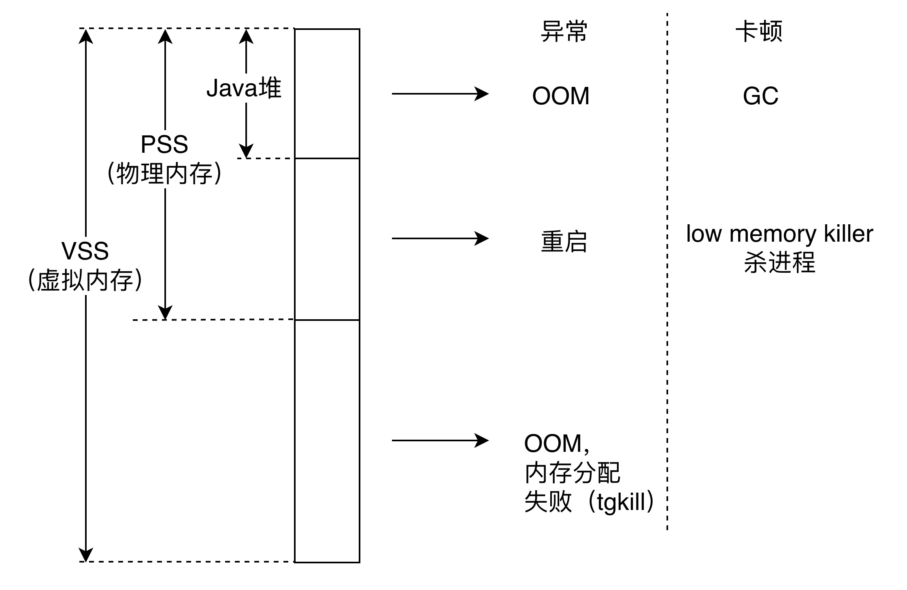
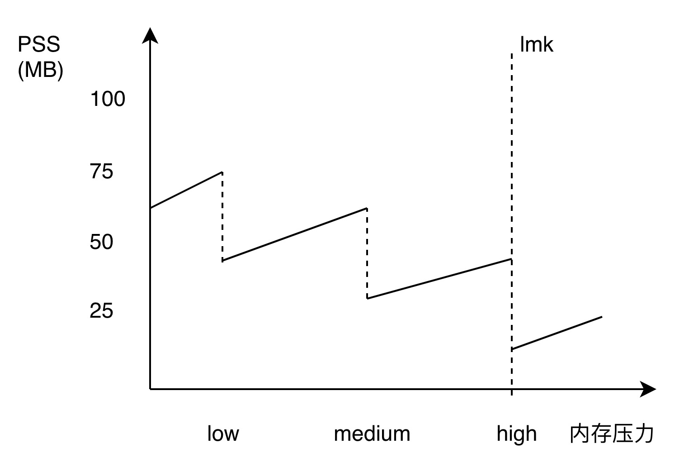
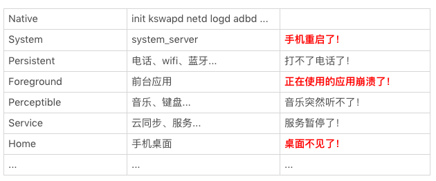

在写今天这篇文章前，我又翻了翻三年前我在 WeMobileDev 公众号写过的《Android 内存优化杂谈》，今天再看，对里面的一句话更有感触：“我们并不能将内存优化中用到的所有技巧都一一说明，而且随着 Android 版本的更替，可能很多方法都会变的过时”。
三年过去了，4GB 内存的手机都变成了主流。那内存优化是不是变得不重要了？如今有哪些技巧已经淘汰，而我们又要升级什么技能呢？
今天在 4GB 内存时代下，我就再来谈谈“内存优化”这个话题。
移动设备发展
Facebook 有一个叫device-year-class的开源库，它会用年份来区分设备的性能。可以看到，2008 年的手机只有可怜的 140MB 内存，而今年的华为 Mate 20 Pro 手机的内存已经达到了 8GB。

内存看起来好像是我们都非常熟悉的概念，那请问问自己，手机内存和 PC 内存有哪什么差异呢？8GB 内存是不是就一定会比 4GB 内存更好？我想可能很多人都不一定能回答正确。
手机运行内存（RAM）其实相当于我们的 PC 中的内存，是手机中作为 App 运行过程中临时性数据暂时存储的内存介质。不过考虑到体积和功耗，手机不使用 PC 的 DDR 内存，采用的是 LPDDR RAM，全称是“低功耗双倍数据速率内存”，其中 LP 就是“Lower Power”低功耗的意思。
以 LPDDR4 为例，带宽 = 时钟频率 × 内存总线位数 ÷ 8，即 1600 × 64 ÷ 8 = 12.8GB/s，因为是 DDR 内存是双倍速率，所以最后的带宽是 12.8 × 2 = 25.6GB/s。

目前市面上的手机，主流的运行内存有 LPDDR3、LPDDR4 以及 LPDDR4X。可以看出 LPDDR4 的性能要比 LPDDR3 高出一倍，而 LPDDR4X 相比 LPDDR4 工作电压更低，所以也比 LPDDR4 省电 20%～40%。当然图中的数据是标准数据，不同的生成厂商会有一些低频或者高频的版本，性能方面高频要好于低频。
那手机内存是否越大越好呢？
如果一个手机使用的是 4GB 的 LPDDR4X 内存，另外一个使用的是 6GB 的 LPDDR3 内存，那么无疑选择 4GB 的运行内存手机要更加实用一些。
但是内存并不是一个孤立的概念，它跟操作系统、应用生态这些因素都有关。同样是 1GB 内存，使用 Android 9.0 系统会比 Android 4.0 系统流畅，使用更加封闭、规范的 iOS 系统也会比“狂野”的 Android 系统更好。今年发布的 iPhone XR 和 iPhone XS 使用的都是 LPDDR4X 的内存，不过它们分别只有 3GB 和 4GB 的大小。
内存问题
在前面所讲的崩溃分析中，我提到过“内存优化”是崩溃优化工作中非常重要的一部分。类似 OOM，很多的“异常退出”其实都是由内存问题引起。那么内存究竟能引发什么样的问题呢？
1. 两个问题

内存造成的第一个问题是异常。在前面的崩溃分析我提到过“异常率”，异常包括 OOM、内存分配失败这些崩溃，也包括因为整体内存不足导致应用被杀死、设备重启等问题。不知道你平时是否在工作中注意过，如果我们把用户设备的内存分成 2GB 以下和 2GB 以上两部分，你可以试试分别计算他们的异常率或者崩溃率，看看差距会有多大。
内存造成的第二个问题是卡顿。Java 内存不足会导致频繁 GC，这个问题在 Dalvik 虚拟机会更加明显。而 ART 虚拟机在内存管理跟回收策略上都做大量优化，内存分配和 GC 效率相比提升了 5～10 倍。如果想具体测试 GC 的性能，例如暂停挂起时间、总耗时、GC 吞吐量，我们可以通过发送SIGQUIT 信号获得 ANR 日志。
adb shell kill -S QUIT PIDadb pull /data/anr/traces.txt它包含一些 ANR 转储信息以及 GC 的详细性能信息。
sticky concurrent mark sweep paused: Sum: 5.491ms 99% C.I. 1.464ms-2.133ms Avg: 1.830ms Max: 2.133ms // GC 暂停时间 Total time spent in GC: 502.251ms // GC 总耗时Mean GC size throughput: 92MB/s // GC 吞吐量Mean GC object throughput: 1.54702e+06 objects/s另外我们还可以使用 systrace 来观察 GC 的性能耗时，这部分内容在专栏后面会详细讲到。
除了频繁 GC 造成卡顿之外，物理内存不足时系统会触发 low memory killer 机制，系统负载过高是造成卡顿的另外一个原因。
2. 两个误区
除了内存引起的异常和卡顿，在日常做内存优化和架构设计时，很多同学还非常容易陷入两个误区之中。
误区一：内存占用越少越好
VSS、PSS、Java 堆内存不足都可能会引起异常和卡顿。有些同学认为内存是洪水猛兽，占用越少应用的性能越好，这种认识在具体的优化过程中很容易“用力过猛”。
应用是否占用了过多的内存，跟设备、系统和当时情况有关，而不是 300MB、400MB 这样一个绝对的数值。当系统内存充足的时候，我们可以多用一些获得更好的性能。当系统内存不足的时候，希望可以做到“用时分配，及时释放”，就像下面这张图一样，当系统内存出现压力时，能够迅速释放各种缓存来减少系统压力。

现在手机已经有 6GB 和 8GB 的内存出现了，Android 系统也希望去提升内存的利用率，因此我们有必要简单回顾一下 Android Bitmap 内存分配的变化。
-
在 Android 3.0 之前，Bitmap 对象放在 Java 堆，而像素数据是放在 Native 内存中。如果不手动调用 recycle，Bitmap Native 内存的回收完全依赖 finalize 函数回调，熟悉 Java 的同学应该知道，这个时机不太可控。
-
Android 3.0～Android 7.0 将 Bitmap 对象和像素数据统一放到 Java 堆中，这样就算我们不调用 recycle，Bitmap 内存也会随着对象一起被回收。不过 Bitmap 是内存消耗的大户，把它的内存放到 Java 堆中似乎不是那么美妙。即使是最新的华为 Mate 20，最大的 Java 堆限制也才到 512MB，可能我的物理内存还有 5GB，但是应用还是会因为 Java 堆内存不足导致 OOM。Bitmap 放到 Java 堆的另外一个问题会引起大量的 GC，对系统内存也没有完全利用起来。
-
有没有一种实现，可以将 Bitmap 内存放到 Native 中，也可以做到和对象一起快速释放，同时 GC 的时候也能考虑这些内存防止被滥用？NativeAllocationRegistry 可以一次满足你这三个要求，Android 8.0 正是使用这个辅助回收 Native 内存的机制，来实现像素数据放到 Native 内存中。Android 8.0 还新增了硬件位图 Hardware Bitmap，它可以减少图片内存并提升绘制效率。
误区二：Native 内存不用管
虽然 Android 8.0 重新将 Bitmap 内存放回到 Native 中，那么我们是不是就可以随心所欲地使用图片呢？
答案当然是否定的。正如前面所说当系统物理内存不足时，lmk 开始杀进程，从后台、桌面、服务、前台，直到手机重启。系统构想的场景就像下面这张图描述的一样，大家有条不絮的按照优先级排队等着被 kill。

low memory killer 的设计，是假定我们都遵守 Android 规范，但并没有考虑到中国国情。国内很多应用就像是打不死的小强，杀死一个拉起五个。频繁的杀死、拉起进程，又会导致 system server 卡死。当然在 Android 8.0 以后应用保活变得困难很多，但依然有一些方法可以突破。
既然讲到了将图片的内存放到 Native 中，我们比较熟悉的是 Fresco 图片库在 Dalvik 会把图片放到 Native 内存中。事实上在 Android 5.0～Android 7.0，也能做到相同的效果，只是流程相对复杂一些。
步骤一：通过直接调用 libandroid_runtime.so 中 Bitmap 的构造函数，可以得到一张空的 Bitmap 对象，而它的内存是放到 Native 堆中。但是不同 Android 版本的实现有那么一点差异，这里都需要适配。
步骤二：通过系统的方法创建一张普通的 Java Bitmap。
步骤三：将 Java Bitmap 的内容绘制到之前申请的空的 Native Bitmap 中。
步骤四：将申请的 Java Bitmap 释放，实现图片内存的“偷龙转凤”。
// 步骤一：申请一张空的 Native BitmapBitmap nativeBitmap = nativeCreateBitmap(dstWidth, dstHeight, nativeConfig, 22); // 步骤二：申请一张普通的 Java BitmapBitmap srcBitmap = BitmapFactory.decodeResource(res, id); // 步骤三：使用 Java Bitmap 将内容绘制到 Native Bitmap 中mNativeCanvas.setBitmap(nativeBitmap);mNativeCanvas.drawBitmap(srcBitmap, mSrcRect, mDstRect, mPaint); // 步骤四：释放 Java Bitmap 内存srcBitmap.recycle();srcBitmap = null；虽然最终图片的内存的确是放到 Native 中了，不过这个“黑科技”有两个主要问题，一个是兼容性问题，另外一个是频繁申请释放 Java Bitmap 容易导致内存抖动。
测量方法
在日常开发中，有时候我们需要去排查应用程序中的内存问题。对于系统内存和应用内存的使用情况，你可以参考 Android Developer 中 《调查 RAM 使用情况》。
adb shell dumpsys meminfo <package_name|pid> [-d]1. Java 内存分配
有些时候我们希望跟踪 Java 堆内存的使用情况，这个时候最常用的有 Allocation Tracker 和 MAT 这两个工具。
在我曾经写过的《Android 内存申请分析》里，提到过 Allocation Tracker 的三个缺点。
-
获取的信息过于分散，中间夹杂着不少其他的信息，很多信息不是应用申请的，可能需要进行不少查找才能定位到具体的问题。
-
跟 Traceview 一样，无法做到自动化分析，每次都需要开发者手工开始 / 结束，这对于某些问题的分析可能会造成不便，而且对于批量分析来说也比较困难。
-
虽然在 Allocation Tracking 的时候，不会对手机本身的运行造成过多的性能影响，但是在停止的时候，直到把数据 dump 出来之前，经常会把手机完全卡死，如果时间过长甚至会直接 ANR。
因此我们希望可以做到脱离 Android Studio，实现一个自定义的“Allocation Tracker”，实现对象内存的自动化分析。通过这个工具可以获取所有对象的申请信息（大小、类型、堆栈等），可以找到一段时间内那些对象占用了大量的内存。
但是这个方法需要考虑的兼容性问题会比较多，在 Dalvik 和 ART 中，Allocation Tracker 的处理流程差异就非常大。下面是在 Dalvik 和 ART 中，Allocation Tacker 的开启方式。
// dalvikbool dvmEnableAllocTracker()// artvoid setAllocTrackingEnabled()我们可以用自定义的“Allocation Tracker”来监控 Java 内存的监控，也可以拓展成实时监控 Java 内存泄漏。这方面经验不多的同学也不用担心，我在今天的“课后作业”提供了一个自定义的“Allocation Tracker”供你参考。不过任何一个工具如果只需要做到线下自动化测试，实现起来会相对简单，但想要移植到线上使用，那就要更加关注兼容性、稳定性和性能，付出的努力要远远高于实验室方案。
在课后作业中我们会提供一个简单的例子，在熟悉 Android Studio 中 Profiler 各种工具的实现原理后，我们就可以做各种各样的自定义改造，在后面的文章中也会有大量的例子供你参考和练习。
2. Native 内存分配
Android 的 Native 内存分析是一直做得非常不好，当然 Google 在近几个版本也做了大量努力，让整个过程更加简单。
首先 Google 之前将 Valgrind 弃用，建议我们使用 Chromium 的AddressSanitize 。遵循“谁最痛，谁最需要，谁优化”，所以 Chromium 出品了一大堆 Native 相关的工具。Android 之前对 AddressSanitize 支持的不太好，需要 root 和一大堆的操作，但在 Android 8.0 之后，我们可以根据这个指南来使用 AddressSanitize。目前 AddressSanitize 内存泄漏检测只支持 x86_64 Linux 和 OS X 系统，不过相信 Google 很快就可以支持直接在 Android 上进行检测了。
那我们有没有类似 Allocation Tracker 那样的 Native 内存分配工具呢？在这方面，Android 目前的支持还不是太好，但 Android Developer 近来也补充了一些相关的文档，你可以参考《调试本地内存使用》。关于 Native 内存的问题，有两种方法，分别是Malloc 调试和Malloc 钩子。
Malloc 调试可以帮助我们去调试 Native 内存的一些使用问题，例如堆破坏、内存泄漏、非法地址等。Android 8.0 之后支持在非 root 的设备做 Native 内存调试，不过跟 AddressSanitize 一样，需要通过wrap.sh做包装。
adb shell setprop wrap.<APP> '"LIBC_DEBUG_MALLOC_OPTIONS=backtrace logwrapper"'Malloc 钩子是在 Android P 之后，Android 的 libc 支持拦截在程序执行期间发生的所有分配 / 释放调用，这样我们就可以构建出自定义的内存检测工具。
adb shell setprop wrap.<APP> '"LIBC_HOOKS_ENABLE=1"'但是在使用“Malloc 调试”时，感觉整个 App 都会变卡，有时候还会产生 ANR。如何在 Android 上对应用 Native 内存分配和泄漏做自动化分析，也是我最近想做的事情。据我了解，微信最近几个月在 Native 内存泄漏监控上也做了一些尝试，我会在专栏下一期具体讲讲。
总结
LPDDR5 将在明年进入量产阶段，移动内存一直向着更大容量、更低功耗、更高带宽的方向发展。伴随内存的发展，内存优化的挑战和解决方案也不断变化。而内存优化又是性能优化重要的一部分，今天我讲到了很多的异常和卡顿都是因为内存不足引起的，并在最后讲述了如何在日常开发中分析和测量内存的使用情况。
一个好的开发者并不满足于做完需求，我们在设计方案的时候，还需要考虑要使用多少的内存，应该怎么去管理这些内存。在需求完成之后，我们也应该去回归需求的内存情况，是否存在使用不当的地方，是否出现内存泄漏。
课后作业
内存优化是一个非常“古老”的话题，大家在工作中也会遇到各种各样内存相关的问题。今天的课后作业是分享一下你在工作中遇到的内存问题，总结一下通过 Sample 的练习有什么收获。
在今天文章里我提到，希望可以脱离 Android Studio 实现一个自定义的 Allocation Tracker，这样就可以将它用到自动化分析中。本期的Sample就提供了一个自定义的 Allocation Tracker 实现的示例，目前已经兼容到 Android 8.1。你可以用它练习实现自动化的内存分析，有哪些对象占用了大量内存，以及它们是如何导致 GC 等。
COMMUNITY NOTES
读者评论
更新了例子，完善了操作方式，支持了x86平台的编译运行，兼容7.1到9.0的手机和模拟器，支持x86和armv7a，已经相对稳定
厉害，很厉害，但是对于普通公司的应用来说是不是用不到呢，还是说我们这些普通开发者并没有研究到这个层次。
国民app的开发者知识面真是好宽广
感觉自己太菜了，看的一脸懵逼。老师 ，可以循序渐进一些吗？一开始就从底层开始 ，听不太懂啊......
兴致勃勃地去把sample下载下来想要拜读一下，发现是JNI里面看的我一脸懵逼
“一张图，毁十优“，之前专门做过一段时间性能优化工作，内存就是优化的重点，除了解决内存泄漏，减少内存的申请，及时回收，减少常驻内存，精简布局外，图片也做了专项整治，依据图片所占内存大小＝长×宽/（资源图片文件密度/手机屏幕密度）∧2×每个像素占用字节数的大体相关性，从这几个维度下手，各个击破，还是收获不小。当然如张老师所言，我以后会多考虑怎么提高内存的使用效率上，而不是单纯的想着怎么减小内存使用的绝对值上，涨姿势了，感谢，加油！
做应用层久了，好多东西都没去深入研究，看了这几篇，好多都没用过，深感惭愧，不过从另一方面想，这也是一个提升自己的机会，加油努力！
正是我需要的教程，感谢张老师
大佬，越讲越难了
学习起来很吃力，文章好多都看不懂，现在在处理内存相关的问题，可以告知下都需要掌握哪些基础的知识吗？系统学习的，多谢多谢
https://www.jianshu.com/p/f6386d33062b，这个同学写的基于线上用户的内存占用分析也很不错，对leakcanery进行了改造，并对hprof进行本地解析，在上传到服务端做聚合。
通过查看JNI代码，学到了 JNI中CmakeList的跨模块编译，native 函数名的简写#define JNI_METHOD_DECL(ret_type, method_name) \ extern "C" JNIEXPORT ret_type JNICALL Java_##com_dodola_alloctrack##_##AllocTracker##_##method_name以及 Substrate，fbjni ，ndk_dlopen 库的使用，对于源码中的Substrate 库的编译是自己从源码中抽取出来的，貌似没有在github上面看到
说一下今天作业的遇到的问题和解决，希望可以帮助到大家。1.界面中的输出内存DUMP到日志，说的是把日志写入到Logcat的中并不是输入。2.java代码中 new File(Environment.getExternalStorageDirectory(), "crashDump"); 是日志输出的文字，我们看Logcat中 saveARTAllocationData write file to XXXX 就能找到对应的日志文件，和git上说的路径可能不一致。3.评论中有同学说看不到日志的输出。代码中 【tracker.initForArt(BuildConfig.VERSION_CODE, 5000);//从 start 开始触发到5000的数据就 dump 到文件中】 有说明开始后到达5000的数据才会写入文件。 大家设备内存情况不一样，GC回收的频率也不一致，在你不停生产1000个对象的时候，GC不断的跟随回收，导致无法达到 5000的数据量，所以一直没有日志的写入。 可以尝试修改对象的创建数量改成10000。
android 4.4.2手机 点击开始记录就crash，无法生成dump日志，利用第一课的native crash定位方式，报错位置是NDK14提供的库函数，换成NDK17还是库函数问题。使用android8.0手机成功。
能不能讲点实例，这种纯理论，让人一脸懵逼啊。
老师好，adb shell kill -S QUIT PID 这个命令，执行了一下，有几点实践记录如下：1、其中“-S”文中是大写，实际执行是小写才行“-s”，查看adb shell kill的命令帮助如下：usage: kill [-s signame | -signum | -signame] { job | pid | pgrp } ... kill -l [exit_status ...]2、我用了一台 小米5 Android 7.0 一台 三星S8 Android 8.0 和一台华为荣耀3 Android 4.4.2 没root的三台机器执行这个命令会提示kill: PID : Operation not permitted;3、用了一个模拟器执行就可以
这是第三个了，没有一个能跑起来的。各种懵呀。
谢谢老师，之前把理论基础过了一遍，一直不知道怎么实操，看完之后有了新的思路实操了
fresco 在5.0上废弃了ashmem是因为考虑了兼容性问题，java bitmap频繁创建造成抖动，以及5.0以上GC的优化，这些方面才废弃掉的么?
最早开始做电商app时，用的是imageloader，后来不更新了，改换了Google glide，现在还一直用着，内存优化上远没有作者研究的这么深入，学习了。